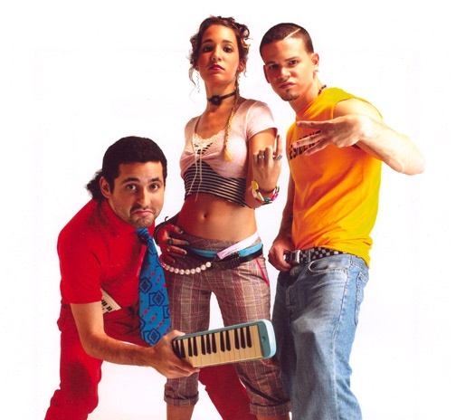

Calle 13
Calle 13 irrumpió en la escena musical con una propuesta de música urbana alternativa. A diferencia del reguetón comercial de la época, que dependía de ritmos genéricos prestados (como el Dem Bow tradicional), el grupo se fundó sobre una estricta división del trabajo creativo.
La Lírica y la Rítmica Vocal (René Pérez - "Residente"): Aportó una métrica rap experimental, caracterizada por un lenguaje satírico, uso del humor negro y una velocidad rítmica poco común en el género urbano de mediados de los 2000.
Arquitectura Sonora (Eduardo Cabra - "Visitante"): Multiinstrumentista y productor. Diseñó un laboratorio musical que rechazaba el uso exclusivo de muestras digitales (samples), integrando instrumentos reales, percusiones folclóricas y estructuras de géneros tradicionales.
.png)
Composición y Evolución Musical
La trayectoria de Calle 13 se define por una constante expansión de su paleta sónica, transitando desde la música urbana hacia la música de fusión global y la canción de autor.
[Música Urbana/Reguetón(2004-2005)] ──> [Fusión Afro-Caribeña(2007-2008)] ──> [Folk / Rock Latino(2010)] ──> [Música de Vanguardia / Orquestal(2014)]
Experimentación Musical y Consolidación (2006–2007)
Con su segundo álbum de estudio, Residente o Visitante (2007), el grupo profundizó en la experimentación sonora, incorporando ritmos folclóricos latinoamericanos, tango y rock. Sus líricas comenzaron a transitar de la provocación irreverente hacia una crítica social más aguda. Esta etapa, galardonada con dos premios Latin Grammy, incluyó colaboraciones de alto perfil que validaron su versatilidad artística en el panorama internacional.
Conciencia Continental e Identidad (2008–2010)
La publicación de Los de atrás vienen conmigo (2008) significó la maduración ideológica de la banda. El viaje geográfico y vivencial por el continente inspiró una lírica de profunda conexión social y política. Esta transición culminó conceptualmente con el lanzamiento de «Latinoamérica» (2010), una pieza fundamental que se erigió como un himno de resistencia e identidad cultural, otorgándoles el récord de cinco Latin Grammys en una sola gala.
Discursos Globales
Sus últimas producciones, Entren los que quieran (2010) y Multi_Viral (2014), consolidaron a Calle 13 como un referente global de la canción de protesta contemporánea. Abordando temáticas como la manipulación mediática, los movimientos estudiantiles y la geopolítica universal, la banda diversificó sus plataformas de activismo. Durante este periodo, la agrupación se consagró históricamente como la más premiada por la Academia Latina de la Grabación.
EL LEGADO Y LA BIFURCACIÓN ARTÍSTICA (2015–PRESENTE)
En el año 2015, tras concluir la gira de Multi_Viral, Calle 13 anunció una pausa indefinida, cerrando un ciclo de una década que transformó la música popular contemporánea con un total de 22 Latin Grammys y 3 Premios Grammy en su haber. Lejos de extinguirse, la identidad de la banda se bifurcó en dos trayectorias fundamentales: René Pérez Joglar continuó expandiendo su narrativa social y cinematográfica a través de su proyecto solista («Residente»), obteniendo un éxito crítico continuo; por su parte, Eduardo Cabra («Visitante») se consolidó como uno de los productores y directores musicales más laureados y vanguardistas del continente. El legado de Calle 13 permanece como el estándar de la total independencia creativa dentro del mercado globalizado.
